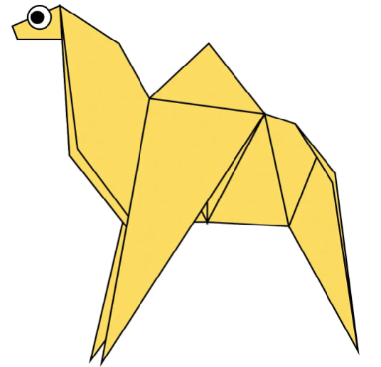
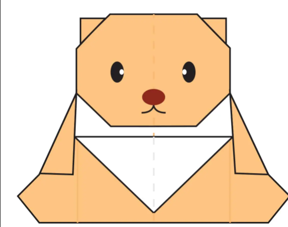
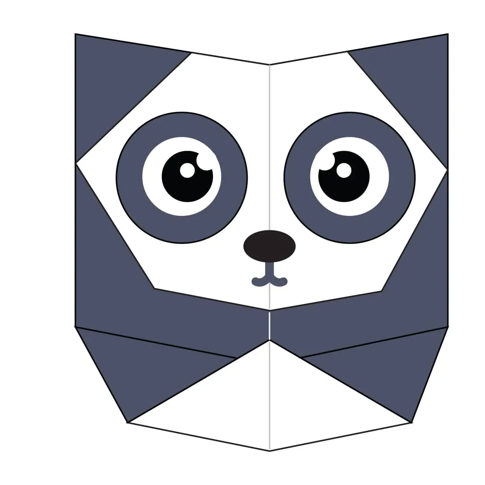

Camel
- CAMEL'S EAR ARE VERY FURRY.
- CAMELS CAN MOVE EASILY ON SAND BECAUSE THEY HAVE SPECIALLY DESIGNED FEETS.

TEDDY BEAR
- Teddy bears got their name from the story that Teddy Roosevelt refused to shoot a bear cub while on a hunting trip in 1902.
- The world's smallest stitched teddy bear is a mere 0.29 inches tall! It was created by South African artist Cheryl Moss who is known for her minuscule work.

PINGEON
- Pigeons have fought alongside humans in World War I and II.
- Each wing of pigeon has 23 remiges which remain attached to its hinder border.

PANDA
- Their eyes are different to normal bears.
- They spend a lot of their day eating.
- Bamboo is critical to their diet.

CHAMELEON
- THEY MAINLY CHANGE COLOR IN ORDER TO COMMUNICATE OR REGULATE BODY TEMPERATURE.
- SKIN CRYSTALS ENABLE THEM TO CHANGE COLOR AT WILL.